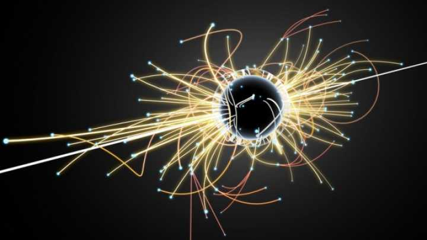
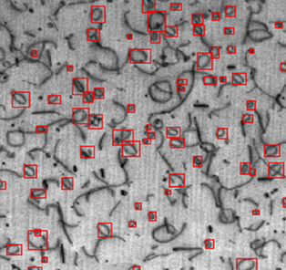
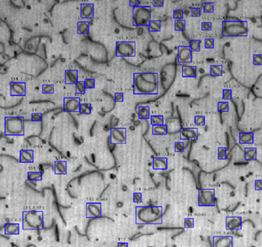

Experience
Senior Software Engineer, DataChat
DataChat is a conversational AI SaaS platform that enables users to interact with their data using natural language queries.
I'm part of the Release squad, which is responsible for managing hosted environments (development and production servers), CI/CD pipelines, cloud infrastructure, and software development processes. I was previously a part of the Generative AI and Machine Learning squads where I worked on backend design and implementation to add new and improve existing user-facing features.
Fellow, Institute for Research and Innovation in Software for High Energy Physics (IRIS-HEP)

Graph Methods for Particle Tracking
The High Luminosity Large Hadron Collider requires efficient and scalable particle track reconstruction, as existing algorithms cannot meet current demands. This project investigated Graph Neural Networks as a potential solution.
I utilized the TrackML Codalab dataset, which contains 9,000 events and 100,000 hits from 10,000 particles. I developed embedding pipelines to find the distance metric between 3D hit measurements pairs, optimizing particle differentiation. I also accelerated the nearest neighbors search by replacing Facebook’s Faiss with Fixed Radius Nearest Neighbors (FRNN) on CUDA.
NextGen Fellow, Citrine Informatics


Deep Learning for Automated Defect Recognition in Electron Microscopy Images
Defect classification is used to assess the quality of metal alloys. In nuclear applications, this process is critical for understanding the effects of radiation and ensuring the safe operation of reactors. Defects are typically identified through electron microscopy, but manual image analysis is slow, error-prone, and inconsistent. This project aimed to automate this process using convolutional neural networks.
I utilized the RetinaNet model and performed hyperparameter tuning to achieve optimal results. I also developed an evaluation pipeline to measure recall and precision metrics. The resulting detection model achieved an average recall of 68% and an average precision of 85% on the test set. The relatively lower recall was primarily due to challenges in detecting small defects.